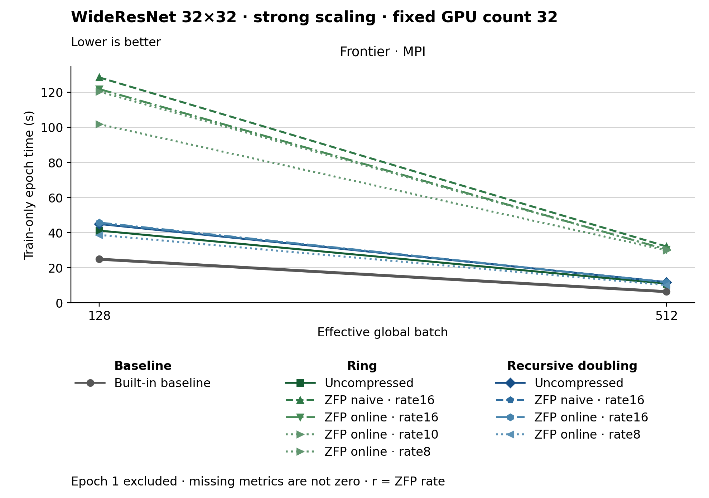

The figure uses lines. Methods use colors, line styles and markers. The metric is Train-only epoch time (s). Frontier · MPI, Effective global batch 128: Built-in baseline has the lowest plotted value, 24.850. Frontier · MPI, Effective global batch 512: Built-in baseline has the lowest plotted value, 6.360. Epoch 1 is excluded. Values are medians; when repeated runs are available the selected repeat policy is median. These are not confidence intervals across repeated jobs. Missing or unrecorded metrics are omitted, not set to zero.
| Panel | Effective global batch | Method | Value | Runs |
|---|---|---|---|---|
| Frontier · MPI | 512 | none | 6.36 | 1 |
| Frontier · MPI | 512 | ring | 10.92 | 1 |
| Frontier · MPI | 512 | ring_zfp_naive:16 | 32.1 | 1 |
| Frontier · MPI | 512 | ring_zfp_online_coll:16 | 30.39 | 1 |
| Frontier · MPI | 512 | ring_zfp_online_coll:10 | 30.46 | 1 |
| Frontier · MPI | 512 | recursive_doubling | 11.8 | 1 |
| Frontier · MPI | 512 | recursive_doubling_zfp_naive:16 | 11.82 | 1 |
| Frontier · MPI | 512 | recursive_doubling_zfp_online_coll:16 | 11.67 | 1 |
| Frontier · MPI | 512 | recursive_doubling_zfp_online_coll:8 | 10.09 | 1 |
| Frontier · MPI | 128 | none | 24.85 | 1 |
| Frontier · MPI | 128 | ring | 41.14 | 1 |
| Frontier · MPI | 128 | ring_zfp_naive:16 | 128.43 | 1 |
| Frontier · MPI | 128 | ring_zfp_online_coll:16 | 121.76 | 1 |
| Frontier · MPI | 128 | ring_zfp_online_coll:10 | 120.33 | 1 |
| Frontier · MPI | 128 | recursive_doubling | 44.91 | 1 |
| Frontier · MPI | 128 | recursive_doubling_zfp_naive:16 | 45.19 | 1 |
| Frontier · MPI | 128 | recursive_doubling_zfp_online_coll:16 | 45.69 | 1 |
| Frontier · MPI | 128 | recursive_doubling_zfp_online_coll:8 | 38.67 | 1 |
| Frontier · MPI | 128 | ring_zfp_online_coll:8 | 101.78 | 1 |
| Frontier · MPI | 512 | ring_zfp_online_coll:8 | 29.9 | 1 |